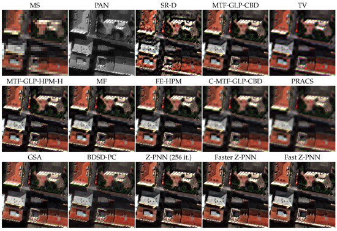

week3
This week covers the key steps in remote sensing data processing analysis such as atmospheric corrections, merging images and enhancements that work together to improve the usability of the data and the accuracy of the analysis.
1 Summary
1.1 Atmospheric correction
Atmospheric correction is the process of correcting satellite images for the effects of atmospheric scattering and absorption. This step is essential to improve the accuracy of surface reflectance data. In GEE, many satellite datasets have already been preprocessed to include atmospheric correction, such as the Landsat and Sentinel series. For data that have not been pre-processed, GEE provides tools and algorithms to implement atmospheric corrections, for example using the 6S model (Second Simulation of the Satellite Signal in the Solar Spectrum) or the DOS (Dark Object Subtraction) method.
1.2 Merging images
Merging images (sometimes called mosaicing or fusion) is the process of combining multiple images into a single image, which is useful when working with large regions or integrating data from different points in time. In GEE, images can be merged using methods such as mosaic() or median(). mosaic() method superimposes images in the order they appear in the set, while median() can take the median value of each pixel, which is very effective in removing clouds and cloud shadows.
1.3 Enhancement
Image enhancement is a set of techniques to improve the quality of an image by adjusting the contrast, brightness, colour etc. of the image. In GEE, the visualize() function can be used to adjust the display parameters of an image, such as setting the minimum and maximum values to change the contrast, or creating a false-colour image by selecting a specific combination of bands. Furthermore, in remote sensing image processing, enhancement is not limited to adjusting contrast and brightness, but also includes a range of advanced techniques such as ratio analysis, filtering, texture analysis, data fusion and principal component analysis (PCA). These techniques can improve the interpretability and application value of image data from different perspectives.
1.3.1 Ratio analysis
Ratio analysis, in which the ratio of one band to another is used as the basis for analysis, is particularly useful in highlighting specific surface features and reducing the effects of illumination changes. For example, in vegetation analysis, the ratio of the red and near-infrared bands can be used to emphasise vegetated areas. In GEE, ratio analyses can be achieved by direct manipulation of the bands.
1.3.2 Filtering
Filtering refers to the application of various spatial or temporal filters to smooth, enhance or suppress specific features in an image. In GEE, inbuilt functions such as median filter, high pass and low pass filters can be used to spatially filter a collection of images to remove noise or emphasise features such as edges.
1.3.3 Texture Analysis
Texture analysis involves evaluating the roughness, smoothness or other textural features of patterns in an image. This is very effective in distinguishing areas with different surface features such as urban and natural landscapes.Methods such as grey level covariance matrix (GLCM) can be used in GEE to compute and analyse the texture features of an image.
1.3.4 Data fusion
Data fusion is the process of combining data from different sources (e.g., from different sensors or at different times) to improve resolution or to reduce gaps in the data (e.g., cloud coverage).GEE provides several data fusion techniques, such as pixel-level fusion, feature-level fusion, and decision-level fusion, which enable users to perform comprehensive analyses using data from multiple sources.
1.3.5 Principal Component Analysis (PCA)
PCA is a statistical technique that reduces the dimensionality of data by transforming the data to a new coordinate system while retaining as much variability as possible in the original data. In remote sensing image analysis, PCA is commonly used to enhance contrast in images, remove redundant information with high correlation, and compress data. Although GEE does not provide PCA functions directly, users can implement PCA with custom functions or use other statistical analysis tools on GEE to perform similar data dimensionality reduction and feature extraction.
2 Application
Below I will describe specific applications of the four different analyses:
A. Application of ratio analysis: vegetation monitoring
In vegetation health and growth monitoring, ratio analysis is often used to highlight differences between vegetation and other surface types. For example, the normalised vegetation index (NDVI), which is obtained by calculating the ratio of the near-infrared band to the red band, is a useful indicator of the health and biomass of vegetation. This method is widely used in agricultural management, forest monitoring and ecological research.
For example, Bajocco, S. et al.(2022)’s study explores the relationship between the Normalized Difference Vegetation Index (NDVI) and the Leaf Area Index (LAI) in agricultural settings. It aims to develop a comprehensive library of conversion equations for estimating LAI from NDVI data, based on empirical relationships established through extensive literature review and analysis.
B. Filtering Applications: Urban Planning
In urban planning and building identification, filtering techniques can help remove image noise and improve the clarity of building edges. By applying spatial filters, such as edge enhancement filters, city layouts and road networks can be identified more clearly to support urban planning and traffic management.
C. Texture Analysis Application: Land Use Classification
Texture analysis is able to extract texture information from images, which can be used to distinguish areas with different surface texture characteristics. This is particularly useful in land use and land cover classification, such as distinguishing between urban built-up areas, agricultural land and forests. Texture features increase the accuracy of classification, especially in high-resolution satellite image analysis.
This paper by Przemysław Kupidura(2019) investigates the effectiveness of various texture analysis methods, including the gray level co-occurrence matrix (GLCM), Laplace filters, and granulometric analysis, for improving land use/cover classification.
D. Data fusion applications: improving image resolution
Data fusion techniques, such as band fusion (Pansharpening), can combine high-resolution panchromatic images with low-resolution multispectral images to produce higher-resolution images. This is critical for applications such as detailed map production, fine agricultural monitoring and urban environmental assessment, as it provides richer surface information.
This study presents a convolutional neural network (CNN) based framework for pansharpening, which is a data fusion technique aimed at enhancing the spatial resolution of multispectral images using high-resolution panchromatic images(Ciotola, M. & Scarpa, G., 2023).

3 Personal Reflections
The application of these advanced image enhancement and analysis techniques on the GEE platform greatly expands the range of applications of remote sensing data, supporting decision-making and scientific research in a variety of fields, from ecological monitoring to urban planning.
These remote sensing processing and analysing methods were my first contact, and the actual operation gave me a lot of new experiences, although I also encountered a lot of difficulties in the process, especially the PCA running process is relatively slow. However, the novelty of the experience makes me look forward to the learning content in the following weeks.